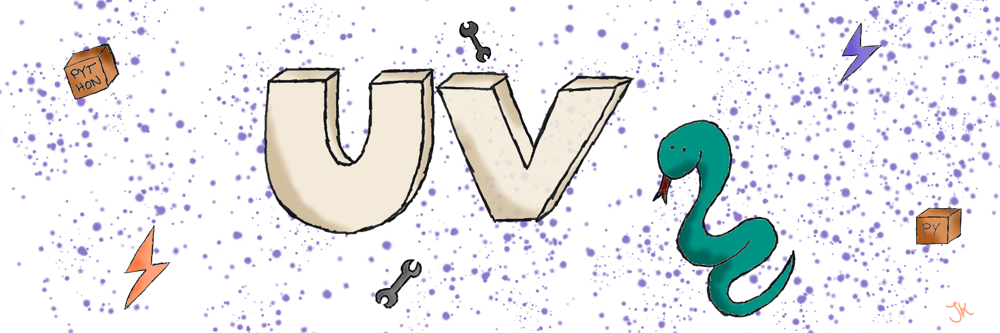

uv: My favourite Python package manager

TL;DR: uv simplifies the whole development
experience. I use it daily to manage my Python projects and it has become an
essential part of my workflow. A brief overview why uv is great...
What is uv?
It lets you manage your Python packages. But not just that, with uv you
can also manage your Python installations. On top of that, it is way faster than
other package managers like pip.
Why uv?
Setting up a new development environment has never been easier. On a new machine,
I can simply install
uv which is just a single command. Having uv installed, run:
... to list all available Python versions. With another command, for example:
... I can install the latest Python version.
So with just 2 commands, I have a working Python development environment on my
machine. There's no need to install Python manually anymore. 
Tip
With
you can scaffold a new Python project and set up the virtual environment. You can start developing right away.
uv initcreates a new project with a default configuration.uv syncsets up the virtual environment.
Another example
Most of the time, programming is a team sport. Working with others on the same
codebase can be challenging, especially when it comes to managing dependencies.
If you set up your project with uv, another developer can easily install
your project, it's as simple as:
Info
uv sync reads the pyproject.toml and uv.lock files to install the
required dependencies and sets up the virtual environment. If the required
Python version is not installed, uv will automatically install it.
Wrap up
Although this introductory post is just a brief overview, I hope it gives you
an idea of how uv can simplify your Python development workflow. In
subsequent posts, I will dive deeper into specific features and use cases of
uv. Until then, you can take a look at a couple of projects that use uv: